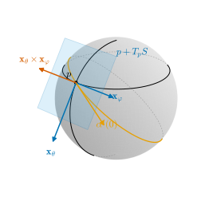
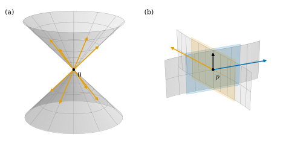

6.2 접평면
이 절의 목표
- 곡면 위에 놓인 곡선의 속도로 접벡터와 접평면 \(T_pS\)를 정의할 수 있다.
- \(T_pS = D\mathbf{x}(q)(\R^2)\)임을 증명하고, 따라서 \(T_pS\)가 매개화에 무관한 2차원 부분공간임을 설명할 수 있다.
- 곡면 위 곡선의 좌표 표현 \(\big(u(t), v(t)\big)\)로 접벡터의 성분을 기저 \(\mathbf{x}_u, \mathbf{x}_v\)에 대해 계산할 수 있다.
- 평면, 그래프 곡면, 구면의 접평면을 구하고, 정칙곡면이 아닌 집합에서는 “접평면”이 평면이 아닐 수 있음을 보일 수 있다.
선수 지식
동기
6.1절에서 정칙곡면을 정의하고, 정칙곡면이 각 점 근처에서 좌표평면 위의 매끄러운 그래프임을 보였다(명제 6.1.8). 매끄러운 그래프라면 미적분학에서처럼 각 점에서 “접하는 평면”이 있을 것이다. 이 평면을 매개화나 그래프 표현에 기대지 않고 곡면 자체로 정의하고 싶다.
곡선에서는 속도 \(\gamma'(t)\)가 접선을 정했다(정의 4.2.4). 곡면 위의 한 점 \(p\)에는 그 점을 지나는 곡선이 무수히 많고, 곡선마다 속도가 하나씩 있다. 이 속도들을 모두 모은 것이 접평면의 후보다(4.1절의 예고 상자). 이 정의는 매개화를 쓰지 않으므로 곡면 자체에 속한다. 질문은 둘이다. 그 집합이 정말 평면(2차원 부분공간)인가? 그리고 매개화 \(\mathbf{x}\)로 어떻게 계산하는가? 두 답 모두 곡선을 \(\mathbf{x}^{-1}\)로 좌표에 옮기는 데서 나오고, 여기에 조건 (2)가 쓰인다. 조건 (2)가 없으면 속도 전체가 평면이 아닐 수 있고(비예 6.2.6), 그 평면이 2차원이라는 것은 조건 (3)에서 나온다.

접벡터와 접평면
곡면 위의 곡선이란 정의 4.1.1의 매개곡선(열린구간에서 \(\R^3\)으로 가는 매끄러운 사상) 가운데 자취가 \(S\)에 들어 있는 것을 말한다.
정의 6.2.1 (접평면, tangent plane). \(S \subseteq \R^3\)이 정칙곡면이고 \(p \in S\)라 하자. 벡터 \(w \in \R^3\)에 대하여 매개곡선 \(\alpha\colon (-\varepsilon, \varepsilon) \to \R^3\)이 있어서 \(\alpha\big((-\varepsilon, \varepsilon)\big) \subseteq S\), \(\alpha(0) = p\), \(\alpha'(0) = w\)이면, \(w\)를 \(p\)에서 \(S\)의 접벡터(tangent vector)라 한다.
\(p\)에서 \(S\)의 접벡터 전체의 집합을 \(p\)에서 \(S\)의 접평면(tangent plane)이라 하고 \(T_pS\)로 쓴다.
\(0\)은 언제나 접벡터다. 상수 곡선 \(\alpha(t) = p\)의 속도이기 때문이다. 정의만 보아서는 \(T_pS\)가 평면인지, 심지어 벡터공간인지도 알 수 없다. 곡면이 정칙이 아니면 실제로 평면이 아닐 수 있다.
비예 6.2.2 (원뿔의 꼭짓점). 정의 6.2.1의 식을 정칙곡면이 아닌 집합에 그대로 써 보자. 두 겹 원뿔 \(K_2 = \{(x, y, z) : x^2 + y^2 = z^2\}\)과 꼭짓점 \(0\)을 보자. \(K_2\) 위에 놓이고 \(\alpha(0) = 0\)인 곡선들의 속도 전체는 \(K_2\) 자신이다.
- \(K_2\)의 모든 점이 속도다. \(w \in K_2\)이면 \((tw^1)^2 + (tw^2)^2 = t^2(w^3)^2\)이므로 \(\alpha(t) = tw\)는 \(K_2\) 위에 있고 \(\alpha'(0) = w\)이다.
- 속도는 \(K_2\)의 점이다. \(\alpha = (a, b, c)\)가 \(K_2\) 위에 있고 \(\alpha(0) = 0\)이면, \(t \neq 0\)에서 \((a(t)/t)^2 + (b(t)/t)^2 = (c(t)/t)^2\)이다. \(a(0) = 0\)이므로 \(a(t)/t \to a'(0)\)이고 \(b, c\)도 같다. 극한을 취하면 \(a'(0)^2 + b'(0)^2 = c'(0)^2\), 즉 \(\alpha'(0) \in K_2\)이다.
\(K_2\)는 벡터공간이 아니다. \((1, 0, 1)\)과 \((-1, 0, 1)\)은 \(K_2\)에 있지만 그 합 \((0, 0, 2)\)는 없다. 한 겹 원뿔 \(K = \{z = \sqrt{x^2 + y^2}\}\)에서는 더 나쁘다. \(c \ge 0 = c(0)\)이므로 \(c\)가 \(t = 0\)에서 최솟값을 갖고 \(c'(0) = 0\)이며, 위와 같은 극한에서 \(a'(0)^2 + b'(0)^2 = 0\)이다. 곧 꼭짓점을 지나는 곡선의 속도는 \(0\)뿐이다(그림 6.2.2(a)). 한 겹 원뿔은 비예 6.1.9(a)에서, 두 겹 원뿔은 연습 6.1.4에서 정칙곡면이 아님을 보인 집합이다.
검증: verify/v-6-2-tangent-plane.py
정칙곡면에서는 이런 일이 생기지 않는다는 것을 보이자. 계획은 이렇다. 매개화 \(\mathbf{x}\)로 곡선 \(\alpha\)를 \(\alpha = \mathbf{x} \circ \beta\), \(\beta(t) = \big(u(t), v(t)\big)\)로 쓰면 연쇄법칙에서 \(\alpha'(0) = u'(0)\,\mathbf{x}_u + v'(0)\,\mathbf{x}_v\)이다. 그러려면 \(\beta = \mathbf{x}^{-1} \circ \alpha\)가 매끄러워야 한다. 그런데 \(\mathbf{x}^{-1}\)은 \(S\) 위에서만 정의되어 있어서 “매끄럽다”는 말부터 뜻이 없다. 여기서 명제 6.1.8(c)가 쓰인다.
보조정리 6.2.3 (곡면으로 가는 매끄러운 사상의 좌표 표현). \(S\)가 정칙곡면이고 \(\mathbf{x}\colon U \to S\)가 매개화라 하자. \(A \subseteq \R^k\)가 열린집합이고 \(\Phi\colon A \to \R^3\)이 매끄러우며 \(\Phi(A) \subseteq \mathbf{x}(U)\)이면, \(\mathbf{x}^{-1} \circ \Phi\colon A \to U\)는 매끄럽다. 따라서 \(\Phi = \mathbf{x} \circ (\mathbf{x}^{-1} \circ \Phi)\)는 매끄러운 사상 두 개의 합성이다.
증명 아이디어: \(\mathbf{x}^{-1}\)은 한 점 근처에서 \(\R^3\)의 열린집합 위의 매끄러운 사상 \(\Pi\)와 같다. 그 근처로 가는 \(A\)의 점들에서는 \(\mathbf{x}^{-1} \circ \Phi = \Pi \circ \Phi\)이다. “그 근처로 가는 점들”이 \(A\)에서 열린집합을 이룬다는 것은 조건 (2)(연속성)에서 나온다.
증명. 먼저 \(h = \mathbf{x}^{-1} \circ \Phi\)는 연속이다. \(\Phi\)는 연속이고 값이 부분공간 \(\mathbf{x}(U)\)에 있으므로 \(A\)에서 \(\mathbf{x}(U)\)로 가는 연속사상이고(정리 3.3.5(c)), 조건 (2)에 의해 \(\mathbf{x}^{-1}\colon \mathbf{x}(U) \to U\)가 연속이기 때문이다.
\(a_0 \in A\)를 고정하고 \(q_0 = h(a_0)\)라 하자. 명제 6.1.8을 \(q_0\)에서 쓰면 \(q_0\)을 포함하는 열린집합 \(U_0 \subseteq U\), \(\R^3\)의 열린집합 \(W\)와 \(O = P^{-1}(\Omega)\), 매끄러운 \(\Pi\colon O \to \R^2\)가 있어서 \(W \cap S = \mathbf{x}(U_0) \subseteq O\)이고 그 위에서 \(\Pi = \mathbf{x}^{-1}\)이다(식 (6.1.7)). \(A_0 = h^{-1}(U_0)\)로 두면 \(h\)가 연속이므로 \(A_0\)은 \(a_0\)을 포함하는 \(A\)의 열린집합, 곧 \(\R^k\)의 열린집합이다. \(a \in A_0\)이면 \(\Phi(a) = \mathbf{x}(h(a)) \in \mathbf{x}(U_0)\)이므로
\[ h(a) = \mathbf{x}^{-1}(\Phi(a)) = \Pi(\Phi(a)) \qquad (a \in A_0) \]
이다. \(\Phi|_{A_0}\)의 값은 열린집합 \(O\)에 있으므로 \(\Pi \circ \Phi|_{A_0}\)는 매끄러운 사상의 합성이고 매끄럽다(명제 2.2.12(b)). 즉 \(A\)의 모든 점은 \(h\)가 매끄러운 열린 근방을 갖는다. 편미분의 존재와 연속성은 각 점 근처의 값만으로 정해지므로 \(h\)는 \(A\)에서 매끄럽다.
명제 6.2.4 (접평면은 전미분의 상이다). \(S\)가 정칙곡면이고 \(\mathbf{x}\colon U \to S\)가 매개화이며 \(q \in U\), \(p = \mathbf{x}(q)\)라 하자.
- (a) \(T_pS = D\mathbf{x}(q)(\R^2)\)이다. 특히 \(T_pS\)는 \(\R^3\)의 2차원 부분공간이고 \(\big(\mathbf{x}_u(q), \mathbf{x}_v(q)\big)\)는 그 기저다.
- (b) \(\alpha\colon (-\varepsilon, \varepsilon) \to \R^3\)이 \(S\) 위의 곡선이고 \(\alpha(0) = p\), \(\alpha\big((-\varepsilon, \varepsilon)\big) \subseteq \mathbf{x}(U)\)이면 \(\beta = \mathbf{x}^{-1} \circ \alpha = \big(u(t), v(t)\big)\)는 매끄러우며
이다. 즉 기저 \(\big(\mathbf{x}_u(q), \mathbf{x}_v(q)\big)\)에 대한 \(\alpha'(0)\)의 성분은 \(\beta'(0) = \big(u'(0), v'(0)\big)\)이다.
이 명제가 말하는 것. 곡면 위 곡선의 속도는 모두 \(\mathbf{x}_u\)와 \(\mathbf{x}_v\)가 만드는 평면 안에 있고, 거꾸로 그 평면의 모든 벡터가 어떤 곡선의 속도다. 그 성분은 곡선을 좌표로 쓴 \(\big(u(t), v(t)\big)\)의 속도다.
증명 아이디어: \(\supseteq\)는 \(U\)의 직선 \(q + t(a, b)\)를 \(\mathbf{x}\)로 보낸 곡선으로 얻는다. \(\subseteq\)는 보조정리 6.2.3으로 \(\alpha = \mathbf{x} \circ \beta\)라 쓰고 연쇄법칙을 쓴다.
증명. (b) 보조정리 6.2.3을 \(k = 1\), \(A = (-\varepsilon, \varepsilon)\), \(\Phi = \alpha\)에 쓰면 \(\beta\)는 매끄럽고 \(\alpha = \mathbf{x} \circ \beta\)이다. \(\beta(0) = q\)이므로 따름정리 2.2.2에서 \(\alpha'(0) = D\mathbf{x}(q)\beta'(0)\)이고, 식 (6.1.1)에 의해 이것이 (6.2.1)이다.
(a) \(\subseteq\): \(w \in T_pS\)라 하고 \(\alpha\)를 정의 6.2.1의 곡선이라 하자. 매개화의 정의에서 \(\mathbf{x}(U) = V \cap S\)이고 \(V\)는 열린집합이다. \(\alpha\)가 연속이므로 \(\alpha^{-1}(V)\)는 \(0\)을 포함하는 열린집합이고, 어떤 \(\varepsilon' \in (0, \varepsilon]\)에 대해 \(\alpha\big((-\varepsilon', \varepsilon')\big) \subseteq V \cap S = \mathbf{x}(U)\)이다. \(\alpha\)를 \((-\varepsilon', \varepsilon')\)로 제한해도 \(\alpha'(0)\)은 그대로이므로 (b)에서 \(w = \alpha'(0) = D\mathbf{x}(q)\beta'(0) \in D\mathbf{x}(q)(\R^2)\)이다.
\(\supseteq\): \((a, b) \in \R^2\)라 하자. \(U\)가 열린집합이므로 작은 \(\varepsilon \gt 0\)에 대해 \(\abs{t} \lt \varepsilon\)이면 \(q + t(a, b) \in U\)이다. \(\alpha(t) = \mathbf{x}(q + t(a, b))\)는 \(S\) 위의 곡선이고 \(\alpha(0) = p\)이며, 따름정리 2.2.2에서 \(\alpha'(0) = D\mathbf{x}(q)(a, b)\)이다. 따라서 \(D\mathbf{x}(q)(a, b) \in T_pS\)이다.
마지막으로 \(D\mathbf{x}(q)\)는 단사(조건 (3))이므로 정리 1.2.8에서 상의 차원은 \(2\)이고, 상은 열 \(\mathbf{x}_u(q), \mathbf{x}_v(q)\)로 생성되므로 이 두 벡터가 기저다.
따름정리 6.2.5 (접평면의 매개화 무관성과 법선 방향). 정칙곡면 \(S\)의 점 \(p\)에서 다음이 성립한다.
- (a) \(\mathbf{x}\colon U \to S\)와 \(\mathbf{y}\colon \bar U \to S\)가 매개화이고 \(\mathbf{x}(q) = \mathbf{y}(\bar q) = p\)이면 \(D\mathbf{x}(q)(\R^2) = D\mathbf{y}(\bar q)(\R^2)\)이다.
- (b) \(\mathbf{x}(q) = p\)이면 \(\mathbf{x}_u(q) \times \mathbf{x}_v(q) \neq 0\)이고 \(T_pS = \{\, w \in \R^3 : \inner{w}{\mathbf{x}_u(q) \times \mathbf{x}_v(q)} = 0 \,\}\)이다. 특히 두 매개화의 외적 \(\mathbf{x}_u \times \mathbf{x}_v\)와 \(\mathbf{y}_{\bar u} \times \mathbf{y}_{\bar v}\)는 \(p\)에서 서로 평행하다.
증명. (a) 명제 6.2.4에 의해 두 집합 모두 \(T_pS\)와 같다. \(T_pS\)의 정의에는 매개화가 쓰이지 않는다. (b) \(n = \mathbf{x}_u(q) \times \mathbf{x}_v(q)\)는 조건 (3b)에 의해 \(0\)이 아니다. 정리 1.6.16(b)에서 \(n\)은 \(\mathbf{x}_u, \mathbf{x}_v\)에 수직이므로 \(T_pS \subseteq n^\perp = \{w : \inner{w}{n} = 0\}\)이다. \(n^\perp\)은 영이 아닌 선형범함수 \(w \mapsto \inner{w}{n}\)의 핵이므로 정리 1.2.8에 의해 2차원이다. 차원이 같으므로 \(T_pS = n^\perp\)이다. \(\mathbf{y}_{\bar u} \times \mathbf{y}_{\bar v}\)도 같은 평면에 수직이고, \(\R^3\)에서 평면에 수직인 벡터들은 1차원 공간 \((T_pS)^\perp\)를 이루므로 두 외적은 평행하다.
비예 6.2.6 (조건 (2)가 없으면: 8자 기둥의 교차선). 비예 6.1.3(c)의 \(\mathbf{x}(u, v) = (\sin 2u, \sin u, v)\)는 조건 (1), (3)을 만족하지만 (2)를 어긴다. 상 \(E \times \R\)의 점 \(p = 0 = \mathbf{x}(0, 0)\)을 보자. \(t \mapsto \mathbf{x}(t, 0)\)과 \(t \mapsto \mathbf{x}(0, t)\)의 속도는 \((2, 1, 0)\)과 \((0, 0, 1)\)이다. 한편 곡선
\[ \alpha(t) = (-\sin 2t,\ \sin t,\ 0) \qquad (\abs{t} \lt \pi/2) \]
도 \(E \times \R\) 위에 있다. \(t \gt 0\)이면 \(\alpha(t) = \mathbf{x}(\pi - t, 0)\)이고, \(t \lt 0\)이면 \(\alpha(t) = \mathbf{x}(-\pi - t, 0)\)이며, \(\alpha(0) = \mathbf{x}(0, 0)\)이기 때문이다. \(\alpha'(0) = (-2, 1, 0)\)은 \(D\mathbf{x}(0, 0)(\R^2) = \Span\{(2, 1, 0), (0, 0, 1)\}\)에 없다. 실제로 \(\mathbf{x}^{-1} \circ \alpha\)는 \(t \gt 0\)에서 \((\pi - t, 0)\), \(t = 0\)에서 \((0, 0)\)이므로 연속조차 아니다. 같은 방식으로 \(t \mapsto (-\sin 2at,\ \sin at,\ bt)\)의 속도 \((-2a, a, b)\)를 얻으므로, \(p\)를 지나는 곡선의 속도 전체는 서로 다른 두 평면 \(\Span\{(2, 1, 0), (0, 0, 1)\}\)과 \(\Span\{(-2, 1, 0), (0, 0, 1)\}\)을 포함한다(그림 6.2.2(b)). 두 평면을 포함하는 집합은 2차원 부분공간일 수 없다. 보조정리 6.2.3과 명제 6.2.4의 증명에서 조건 (2)가 쓰인 곳이 바로 이 현상을 막는다.
검증: verify/v-6-2-tangent-plane.py

계산 예
예 6.2.7 (평면과 그래프 곡면). (a) 예 6.1.2의 평면 \(\mathbf{x}(u, v) = p_0 + u w_1 + v w_2\)에서는 \(\mathbf{x}_u = w_1\), \(\mathbf{x}_v = w_2\)이므로 모든 점에서 \(T_pS = \Span\{w_1, w_2\}\)이다. 평면의 접평면은 평면 자신의 방향이다.
(b) 그래프 곡면 \(\mathbf{x}(u, v) = (u, v, f(u, v))\)(식 (6.1.2))에서는 \(\mathbf{x}_u = (1, 0, f_u)\), \(\mathbf{x}_v = (0, 1, f_v)\)이고
이다. 따름정리 6.2.5(b)에서 \(p = (u_0, v_0, f(u_0, v_0))\)이면 \(T_pS = \{(a, b, c) : c = f_u a + f_v b\}\)이고(편미분은 \((u_0, v_0)\)에서 계산), 아핀 접평면 \(p + T_pS\)의 방정식은
\[ z = f(u_0, v_0) + f_u(u_0, v_0)\,(x - u_0) + f_v(u_0, v_0)\,(y - v_0) \]
이다. 이것은 \(f\)의 1차 근사(정의 2.1.1)의 그래프다. 예를 들어 안장면 \(f = u^2 - v^2\)의 원점에서는 \(f_u = f_v = 0\)이므로 \(T_0S\)는 \(xy\) 평면이고, 점 \((1, 1, 0)\)에서는 \(f_u = 2\), \(f_v = -2\)이므로 \(T_pS = \{c = 2a - 2b\}\), 아핀 접평면은 \(z = 2(x - 1) - 2(y - 1) = 2x - 2y\)이다.
검증: verify/v-6-2-tangent-plane.py
예 6.2.8 (구면의 접평면). 모든 \(p \in S^2(r)\)에서
이다. 즉 구면의 접평면은 위치벡터에 수직이다. 두 가지로 보이자.
- 곡선으로. \(\alpha\)가 구면 위의 곡선이면 \(\abs{\alpha(t)} = r\)이 상수이므로 따름정리 4.1.12에 의해 \(\inner{\alpha(t)}{\alpha'(t)} = 0\)이다(예 2.2.6). \(t = 0\)에서 \(\inner{p}{\alpha'(0)} = 0\)이므로 \(T_pS^2(r) \subseteq p^\perp\)이다. \(p \neq 0\)이므로 \(p^\perp\)은 2차원이고, \(T_pS^2(r)\)도 2차원이므로(명제 6.2.4) 둘은 같다.
- 기준 매개화로. \(p \in S^2(r) \setminus C\)이면 \(p = \mathbf{x}(\theta, \varphi)\)이고 식 (6.1.5)에서 \(\mathbf{x}_\theta \times \mathbf{x}_\varphi = r\sin\theta\,p\)이다. \(r\sin\theta \neq 0\)이므로 따름정리 6.2.5(b)에서 \(T_pS^2(r) = p^\perp\)이다.
북극 \(p = (0, 0, r)\)은 기준 매개화의 상에 없으므로 둘째 방법을 쓰려면 다른 매개화가 필요하다. 위쪽 반구의 그래프 매개화 \(\mathbf{x}_1(u, v) = (u, v, \sqrt{r^2 - u^2 - v^2})\)(예 6.1.5)에서 식 (6.2.2)에 \(f_u = -u/\sqrt{r^2 - u^2 - v^2}\), \(f_v = -v/\sqrt{r^2 - u^2 - v^2}\)를 넣으면 원점에서 \(\mathbf{x}_{1,u} \times \mathbf{x}_{1,v} = (0, 0, 1)\)이므로 \(T_pS^2(r)\)은 \(xy\) 평면 \(= (0, 0, r)^\perp\)이다. 어느 매개화로 계산하든 결과가 같다는 것이 따름정리 6.2.5(a)의 내용이다.
검증: verify/v-6-2-tangent-plane.py
이제 매개화로 쓰이지 않은 곡선의 속도를 기저 \(\mathbf{x}_\theta, \mathbf{x}_\varphi\)로 나타내 보자. 처음 하는 계산이므로 두 방법을 모두 끝까지 쓴다.
예 6.2.9 (접벡터의 성분 계산). 구면 \(S^2(r)\) 위의 곡선 \(\alpha(t) = \tfrac{r}{\sqrt2}(\cos t,\ 1,\ \sin t)\)를 보자. \(\abs{\alpha(t)}^2 = \tfrac{r^2}{2}(\cos^2 t + 1 + \sin^2 t) = r^2\)이므로 \(\alpha\)는 구면 위에 있다. 자취는 평면 \(y = r/\sqrt2\)와 구면이 만나는 원이다. \(\alpha(0) = \tfrac{r}{\sqrt2}(1, 1, 0) = \mathbf{x}(\pi/2, \pi/4)\)이고 \(\alpha'(0) = \tfrac{r}{\sqrt2}(0, 0, 1)\)이다. \(q = (\pi/2, \pi/4)\)에서 \(\cos\theta = 0\), \(\sin\theta = 1\), \(\cos\varphi = \sin\varphi = 1/\sqrt2\)이므로
\[ \mathbf{x}_\theta(q) = (0,\ 0,\ -r), \qquad \mathbf{x}_\varphi(q) = \Big(-\frac{r}{\sqrt2},\ \frac{r}{\sqrt2},\ 0\Big) \]
이다.
- 방법 1: 연립방정식. \(\alpha'(0) = a\,\mathbf{x}_\theta + b\,\mathbf{x}_\varphi = \big(-\tfrac{br}{\sqrt2},\ \tfrac{br}{\sqrt2},\ -ar\big)\)이 \(\big(0,\ 0,\ \tfrac{r}{\sqrt2}\big)\)과 같으려면 첫 성분에서 \(b = 0\), 셋째 성분에서 \(a = -1/\sqrt2\)이다.
- 방법 2: 좌표 표현의 속도. 식 (6.1.6)로 \(\beta(t) = \mathbf{x}^{-1}(\alpha(t)) = \big(\theta(t), \varphi(t)\big)\)를 구한다. \(z/r = \sin t/\sqrt2\)이므로 \(\theta(t) = \arccos(\sin t/\sqrt2)\)이고 \(\theta'(t) = -\dfrac{\cos t/\sqrt2}{\sqrt{1 - \sin^2 t/2}}\), 곧 \(\theta'(0) = -1/\sqrt2\)이다. 또 \(\rho(t) = \tfrac{r}{\sqrt2}\sqrt{\cos^2 t + 1}\)이고 \((x/\rho,\ y/\rho) = (\cos t,\ 1)/\sqrt{\cos^2 t + 1}\)이다. 이 점은 \(\cos t\)만의 함수이므로 \(\varphi(t) = g(\cos t)\) 꼴이고(\(g\)는 매끄러운 함수), \(\varphi'(0) = g'(1)\cdot(-\sin 0) = 0\)이다. 확인으로 \(\varphi(0) = \operatorname{Arg}(1/\sqrt2, 1/\sqrt2) = \pi - 2\arctan\big(1/(\sqrt2 - 1)\big) = \pi - 2\cdot\tfrac{3\pi}{8} = \tfrac{\pi}{4}\)이다(\(1/(\sqrt2 - 1) = \sqrt2 + 1 = \tan(3\pi/8)\)).
두 방법 모두 \(\alpha'(0) = -\tfrac{1}{\sqrt2}\,\mathbf{x}_\theta(q) + 0 \cdot \mathbf{x}_\varphi(q)\)을 준다. 뜻: 이 순간 곡선은 경선을 따라 북쪽으로(\(\theta\)가 줄어드는 쪽으로) 움직이고, 경도는 1차로는 변하지 않는다. 방법 1은 \(\alpha'(0)\)만 알면 되고, 방법 2는 (6.2.1)이 실제로 성립함을 보여 준다.
검증: verify/v-6-2-tangent-plane.py
요약
- 접벡터는 곡면 위에 놓여 \(p\)를 지나는 곡선의 속도이고, 접평면 \(T_pS\)는 그 전체다. 이 정의는 매개화에 무관하다.
- \(\mathbf{x}^{-1}\)은 국소적으로 \(\R^3\)의 매끄러운 사상의 제한이므로, 곡면으로 가는 매끄러운 사상 \(\Phi\)에 대해 \(\mathbf{x}^{-1} \circ \Phi\)는 매끄럽다(보조정리 6.2.3).
- \(T_pS = D\mathbf{x}(q)(\R^2)\)는 2차원 부분공간이고 \((\mathbf{x}_u, \mathbf{x}_v)\)가 기저다. 곡선 \(\alpha = \mathbf{x}(u(t), v(t))\)의 속도의 성분은 \((u'(0), v'(0))\)이다(명제 6.2.4).
- \(T_pS\)는 \(\mathbf{x}_u \times \mathbf{x}_v\)에 수직인 평면이다. 그래프 곡면에서는 \((-f_u, -f_v, 1)^\perp\), 구면에서는 \(p^\perp\)이다.
- 정칙곡면이 아니면 속도 전체가 평면이 아닐 수 있다(원뿔의 꼭짓점, 8자 기둥의 교차선).
다음 절에서는 접벡터의 성분이 매개화에 따라 어떻게 바뀌는지, 그리고 더 근본적으로 곡면 위의 함수가 “매끄럽다”는 것을 어떻게 정의하는지 묻는다. 두 질문 모두 두 매개화 사이의 매개변수 변환이 매끄럽다는 정리에 달려 있다.
연습문제
연습 6.2.1 ★ 그래프 곡면 \(z = xy\)의 점 \(p = (1, 2, 2)\)에서 \(T_pS\)의 기저, \(T_pS\)에 수직인 벡터, 아핀 접평면의 방정식을 구하여라.
풀이
\(f(u, v) = uv\)이므로 \(f_u = v\), \(f_v = u\)이고 \((u, v) = (1, 2)\)에서 \(f_u = 2\), \(f_v = 1\)이다. 기저는 \(\mathbf{x}_u = (1, 0, 2)\), \(\mathbf{x}_v = (0, 1, 1)\)이고, 식 (6.2.2)에서 수직인 벡터는 \((-2, -1, 1)\)이다. 아핀 접평면은 \(z = 2 + 2(x - 1) + (y - 2)\), 곧 \(z = 2x + y - 2\)이다(점 \(p\)를 넣으면 \(2 = 2 + 2 - 2\)).
검증: verify/v-6-2-tangent-plane.py
연습 6.2.2 ★ 단위구면(\(r = 1\))의 점 \(p = \mathbf{x}(\pi/3, \pi/4)\)에서 \(w = \big(1,\ 0,\ -\tfrac{\sqrt6}{2}\big)\)가 접벡터임을 보이고, \(w = a\,\mathbf{x}_\theta + b\,\mathbf{x}_\varphi\)인 \((a, b)\)를 구하여라.
풀이
\(\sin(\pi/3) = \sqrt3/2\), \(\cos(\pi/3) = 1/2\), \(\cos(\pi/4) = \sin(\pi/4) = \sqrt2/2\)이므로 \(p = \big(\tfrac{\sqrt6}{4}, \tfrac{\sqrt6}{4}, \tfrac12\big)\)이고 \(\inner{p}{w} = \tfrac{\sqrt6}{4} - \tfrac{\sqrt6}{4} = 0\)이다. (6.2.3)에 의해 \(w \in T_pS^2\)이다. \(\mathbf{x}_\theta = \big(\tfrac{\sqrt2}{4}, \tfrac{\sqrt2}{4}, -\tfrac{\sqrt3}{2}\big)\), \(\mathbf{x}_\varphi = \big(-\tfrac{\sqrt6}{4}, \tfrac{\sqrt6}{4}, 0\big)\)이다. 셋째 성분에서 \(-\tfrac{\sqrt3}{2}a = -\tfrac{\sqrt6}{2}\), 곧 \(a = \sqrt2\)이다. 둘째 성분에서 \(\tfrac{\sqrt2}{4}\sqrt2 + \tfrac{\sqrt6}{4}b = 0\), 곧 \(b = -\tfrac{2}{\sqrt6} = -\tfrac{\sqrt6}{3}\)이다. 첫째 성분 확인: \(\tfrac12 + \tfrac{\sqrt6}{4}\cdot\tfrac{\sqrt6}{3} = \tfrac12 + \tfrac12 = 1\). 따라서 \(w = \sqrt2\,\mathbf{x}_\theta - \tfrac{\sqrt6}{3}\,\mathbf{x}_\varphi\)이다.
검증: verify/v-6-2-tangent-plane.py
연습 6.2.3 ★ 참인지 거짓인지 판별하고 이유를 대어라. (a) \(p \in T_pS\)이다. (b) \(S \subseteq S'\)이 둘 다 정칙곡면이고 \(p \in S\)이면 \(T_pS = T_pS'\)이다. (c) 두 매개화 \(\mathbf{x}, \mathbf{y}\)가 \(\mathbf{x}(q) = \mathbf{y}(\bar q) = p\)이면 \(\mathbf{x}_u(q) = \mathbf{y}_{\bar u}(\bar q)\)이다. (d) \(\gamma\colon I \to \R^3\)이 \(S\) 위의 곡선이고 \(\gamma(t_0) = p\)이면 \(\gamma'(t_0) \in T_pS\)이다.
풀이
(a) 거짓. 구면에서 \(\inner{p}{p} = r^2 \neq 0\)이므로 (6.2.3)에 의해 \(p \notin T_pS^2(r)\)이다. (평면 \(z = 0\)에서는 참이다.)
(b) 참. \(S\) 위의 곡선은 \(S'\) 위의 곡선이므로 \(T_pS \subseteq T_pS'\)이고, 둘 다 2차원이므로(명제 6.2.4) 같다.
(c) 거짓. \(\mathbf{y}(\bar u, \bar v) = \mathbf{x}(2\bar u, \bar v)\)(정의역 \(\{(\bar u, \bar v) : (2\bar u, \bar v) \in U\}\))도 매개화이고 연쇄법칙에서 \(\mathbf{y}_{\bar u} = 2\mathbf{x}_u\)이다. 기저는 바뀌지만 생성하는 평면은 같다.
(d) 참. \(t_0\)은 열린구간 \(I\)의 점이므로 어떤 \(\varepsilon \gt 0\)에 대해 \((t_0 - \varepsilon, t_0 + \varepsilon) \subseteq I\)이고, \(\alpha(t) = \gamma(t_0 + t)\)는 정의 6.2.1의 곡선이며 \(\alpha'(0) = \gamma'(t_0)\)이다.
연습 6.2.4 ★ 북극 \(p = (0, 0, r)\)을 지나는 대원 \(\alpha(t) = (r\sin t,\ 0,\ r\cos t)\)의 \(p\)에서의 속도를, 위쪽 반구의 그래프 매개화 \(\mathbf{x}_1(u, v) = (u, v, \sqrt{r^2 - u^2 - v^2})\)의 기저에 대한 성분으로 나타내어라. 이 곡선에 구면의 기준 매개화 \(\mathbf{x}(\theta, \varphi)\)의 식 (6.2.1)을 쓸 수 있는가?
풀이
\(t\)가 작으면 \(\alpha(t)\)는 위쪽 반구에 있고 \(\mathbf{x}_1^{-1}(\alpha(t)) = (r\sin t, 0)\)(사영)이다. 그 속도는 \(t = 0\)에서 \((r, 0)\)이다. \(\mathbf{x}_{1,u}(0, 0) = (1, 0, 0)\), \(\mathbf{x}_{1,v}(0, 0) = (0, 1, 0)\)이므로 \(\alpha'(0) = r\,\mathbf{x}_{1,u} + 0\,\mathbf{x}_{1,v} = (r, 0, 0)\)이고, 직접 미분한 \(\alpha'(0) = (r\cos 0, 0, -r\sin 0) = (r, 0, 0)\)과 같다. 기준 매개화는 쓸 수 없다. \(p\)가 \(\mathbf{x}(U)\)에 없고(두 극은 \(C\)에 있다), 게다가 이 대원은 모든 \(t\)에서 \(y = 0\)이고 \(t \in (0, \pi)\)이면 \(x \gt 0\)이라 \(C\) 위를 움직인다. 명제 6.2.4(b)의 가정 \(\alpha \subseteq \mathbf{x}(U)\)가 성립하지 않는다.
연습 6.2.5 ★★ 한 겹 원뿔에서 꼭짓점을 뺀 \(K^* = \{(x, y, z) : z = \sqrt{x^2 + y^2},\ (x, y) \neq 0\}\)은 정칙곡면임을 보이고, 모든 \(p \in K^*\)에서 \(p \in T_pK^*\)임을 보여라. 즉 \(K^*\)의 아핀 접평면은 모두 원점을 지난다. [dC §2-4 연습문제 4 변형]
풀이
\(U = \R^2 \setminus \{0\}\)은 열린집합이고 \(f(u, v) = \sqrt{u^2 + v^2}\)는 \(U\)에서 매끄럽다(양수의 제곱근). \(K^*\)는 \(f\)의 그래프이므로 명제 6.1.4에 의해 정칙곡면이다. \(\rho = \sqrt{u^2 + v^2}\)라 하면 \(\mathbf{x}_u = (1, 0, u/\rho)\), \(\mathbf{x}_v = (0, 1, v/\rho)\)이고, \(p = \mathbf{x}(u, v) = (u, v, \rho)\)에 대해
\[ u\,\mathbf{x}_u + v\,\mathbf{x}_v = \Big(u,\ v,\ \frac{u^2 + v^2}{\rho}\Big) = (u, v, \rho) = p \]
이다. 따라서 \(p \in T_pK^*\)이다. 기하적으로는 원점과 \(p\)를 잇는 모선 \(t \mapsto tp\)가 \(K^*\) 위에 있고(\(t \gt 0\)) \(t = 1\)에서 속도가 \(p\)이기 때문이다(연습 6.2.3(d)). \(p \in T_pK^*\)이므로 \(0 = p + (-p) \in p + T_pK^*\)이다.
검증: verify/v-6-2-tangent-plane.py
연습 6.2.6 ★★★ 비예 6.2.6의 8자 기둥 \(E \times \R\)에서, 원점을 지나는 곡선의 속도 가운데 \((0, 2, 0) = (2, 1, 0) + (-2, 1, 0)\)은 없음을 보여라. 따라서 원점에서 속도 전체는 벡터공간이 아니다.
힌트
\(E\)의 점 \(\beta(s)\)가 원점에 가까우려면 \(\sin s\)가 \(0\)에 가까워야 하므로 \(s\)는 \(0\)이나 \(\pm\pi\) 근처다. 두 경우 모두 \(\abs{x} = 2\abs{y}\sqrt{1 - y^2}\)이다.
풀이
원점 근처의 \(E\). \(\beta(s) = (\sin 2s, \sin s)\)에서 \(\sin 2s = 2\sin s\cos s\)이므로 \(E\)의 모든 점은 \(\abs{x} = 2\abs{y}\,\abs{\cos s} = 2\abs{y}\sqrt{1 - y^2}\)을 만족한다(\(\abs{\cos s} = \sqrt{1 - \sin^2 s}\)).
모순. \(\alpha = (a, b, c)\)가 \(E \times \R\) 위의 곡선이고 \(\alpha(0) = 0\), \(\alpha'(0) = (0, 2, 0)\)이라 하자. 모든 \(t\)에서 \((a(t), b(t)) \in E\)이므로 \(\abs{a(t)} = 2\abs{b(t)}\sqrt{1 - b(t)^2}\)이다. \(t \neq 0\)에서 양변을 \(\abs{t}\)로 나누고 \(t \to 0\)으로 보내면, \(a(0) = b(0) = 0\)이므로 \(\abs{a(t)/t} \to \abs{a'(0)} = 0\)이고 \(2\abs{b(t)/t}\sqrt{1 - b(t)^2} \to 2\abs{b'(0)} = 4\)이다. \(0 = 4\)가 되어 모순이다.
따라서 \((2, 1, 0)\)과 \((-2, 1, 0)\)은 속도이지만(비예 6.2.6) 그 합은 속도가 아니므로, 원점에서 속도 전체는 덧셈에 닫혀 있지 않다. (같은 논증으로 원점에서의 속도 \((a', b', c')\)는 모두 \(\abs{a'} = 2\abs{b'}\)를 만족하므로, 속도 전체는 정확히 비예 6.2.6의 두 평면의 합집합이다.)